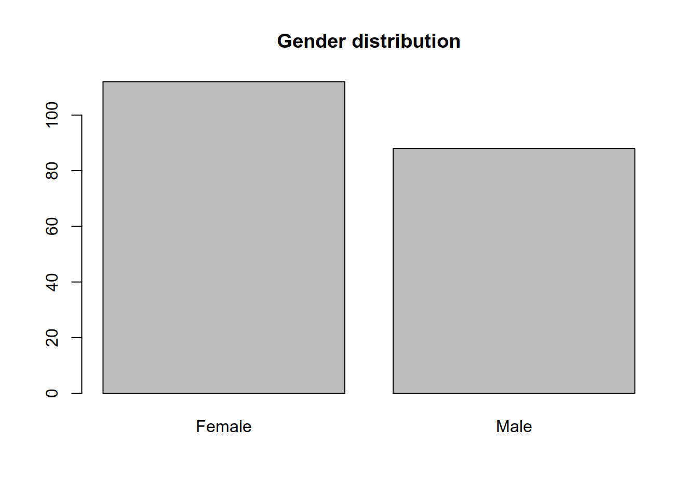

Chapter 2 Assignments
2.1 Assignment 1
R and the basic operations. To execute a single line in RStudio place the cursor on that line press Ctrl (and hold it), then press Enter. To execute multiple lines, select the lines and press Ctrl + Enter. To insert the assignment operator “<-” press Alt + -. Find the complete R code for this exercise here.
- Calculate the sum of
8and31and assign it to a variable namedx.
- Calculate 2 to the power of 8 and assign it to a variable named
y.
- Calculate the ratio of
xandy.
## [1] 0.1523438- Run the code
X + yand read the error message.
## Error in eval(expr, envir, enclos): object 'X' not found- Assign the string literal
"six"to a variable calledx_char.
- Try to calculate the sum of
x_charandyand read the error message.
## Error in x_char + y: non-numeric argument to binary operator- Assign
TRUEto a variable namedx_trueandFALSEto a variable namedx_false. Calculate the sum of these variables and inspect the result.
## [1] 1Exercise 2.2 (Vectors) A vector in R is an ordered collection of values. Each vector can hold an arbitrary number of values of a single type (numeric, character, logical, etc.). An important function used to create vectors is c (concatenate).
Find the complete R code for this exercise here.
seq (sequence), rep (repeat) and : to help in such cases.
- Use the
cfunction to create a numeric vector with values: 1, 4, 5.8 and assign it to an object called .
- Use the
cfunction to create a numeric vector with values 2, 3, 8 and assign it to an object called .
- Use the
cfunction to concatenatexandyto a vector calledz.
- Create a vectors with the numbers from
1to10using bothseqand:.
## [1] 1 2 3 4 5 6 7 8 9 10## [1] 1 2 3 4 5 6 7 8 9 10- Create a vector of length 10 with the number
1at each index. : use therepfunction.
## [1] 1 1 1 1 1 1 1 1 1 1- Create the vector 1, 2, 3, 1, 2, 3, 1, 2, 3 using
rep.
## [1] 1 2 3 1 2 3 1 2 3- Create the vector 1, 1, 1, 2, 2, 2 using
rep.
- Use the assignment operator to change the first element of the last vector you created from 1 to 3.
- Use the assignment operator to change the last element to 9.
- Use the subset operator[]to select the first and the last elements.
## [1] 3 9- Use the subset operator to select only those elements that are equal to 1.
## [1] 1 1mall contains data from interviews with mall customers. It contains the following variables (columns):
- Id: Customer Id
- Gender (character): Customer gender (male/female)
- Age (numeric): Age in years
- Income (numeric): Annual income (in 1,000 USD)
- Score (numeric): Customer purchasing score computed by the mall.
You can find the complete R code for this exercise here.
- Copy paste the content of Problem_3.R located in the github repository into a new script in your R-Studio.
- Run the code that downloads and reads the data file.
- Examine the result using the
strfunction.
## 'data.frame': 200 obs. of 5 variables:
## $ Id : int 1 2 3 4 5 6 7 8 9 10 ...
## $ Gender: chr "Male" "Male" "Female" "Female" ...
## $ Age : int 19 21 20 23 31 22 35 23 64 30 ...
## $ Income: int 15 15 16 16 17 17 18 18 19 19 ...
## $ Score : int 39 81 6 77 40 76 6 94 3 72 ...## The str() function prints a summary of an object.
## In the case of data frames it prints the number of observations (rows), the number of variables (columns)
## and the first few values of each column- How many customers are included in the dataset?
## Answer: 200 customers
## Hint: look at the result of str(mall).
## Alternatively, use nrow
nrow(mall)## [1] 200- What is the age of the first customer in the dataset?
## Answer: 19 years
## Hint click on the mall object in the global environment pane and look up the value of the Age column
## for the first customer.
## Alternatively, you can select it using the
## subset operator:
mall[1, "Age"]## [1] 19- What is the gender of the last customer in the dataset?
## Answer: Male
## Scroll to the bottom of the table (you need to click on the mall object in the environment pane to open it in table view)
## and look up the gender of the last customer
## Alternatively you can select it using the subset operator.
## To select the last row we need to now its position, i.e. how many rows are there
## We can compute that using nrow.
n <- nrow(mall)
mall[n, "Gender"]## [1] "Male"- Compute the average customer age in this dataset using the
meanfunction.
## Answer: 38.85 years
## Use the $ operator to select a column by name (note that column names are case-sensitive)
mean(mall$Age)## [1] 38.85- Compute the minium, maximum, and median age and interpret the results.
## [1] 18## [1] 70## [1] 36## Alternatively, you can get these descriptive statistics using the summary function:
summary(mall$Age)## Min. 1st Qu. Median Mean 3rd Qu. Max.
## 18.00 28.75 36.00 38.85 49.00 70.00## The youngest customer in the sample was 18 years old and the oldest was 70 years old.
## About 50% (half) of the customers were younger than 36 years (media). About a quarter were
## younger than 28.75 years (first quartile: 1st Qu. in the output). About a quarter of the
## customers were older than 49.0 years (third quartile: 3rd Qu. in the output)- Compute the 0.05, 0.2, 0.5, 0.75 and 0.95 empirical quantiles of age and interpret the result.
## 10% 25% 50% 75% 95%
## 21.00 28.75 36.00 49.00 66.05## About 10% of the customers were younger than 21 years (0.1 empirical quantile) and about 5% of the customers were older
## than 66.05 years (0.95 empirical quantile).
## The other quantiles are already discussed under h)- How many customers were younger than the average age? Hint: create a logical vector and compute its sum using the
sumfunction.
## Answer: 113
## Then we create a vector of logical values that are TRUE for these observations (rows)
## with age less than 38.85 (avgAge) and FALSE otherwise.
## Note that "<" is a logical operator (examine the contents of ) ageLessThanAvg
ageLessThanAvg <- (mall$Age < mean(mall$Age))
## Sum the TRUE/FALSE values in ageLessThanAvg
sum(ageLessThanAvg)## [1] 113## When used in arithmetic operations TRUE is coerced (converted) to 1 and FALSE is coerced to 0.
## Therefore the sum of a logical vector is simply the number of TRUE values.
## If you have difficulties with the above example, try it with a simple vector,
## change the TRUE/FALSE values and compare the result.
sum(c(TRUE, TRUE, FALSE))## [1] 2- How many customers were male and how many were female? Compute the result using the
tablefunction.
## Answer
## Female Male
## 112 88
## Until now we have summarised
## numeric variables (Age) using mean/median/quartiles, minimum and maximum.
## For nominally scaled variables like Gender the above approach does not work, though.
##
## Nominal scales assign labels to objects and the labels have no apparent numeric meaning, e.g. gender (Male/Female)
## employment status (unemployed/employed/retired), etc.
## An appropriate summary for these types of variables is the frequency table.
freqGender <- table(mall$Gender)
freqGender##
## Female Male
## 112 88## A common way to graphically present the frequencies is the bar chart
barplot(freqGender)
title('Gender distribution')
## The frequency table simply contains the number of male customers and the number of female customers
## Alternatively you can count the number of times "Female" occurs in the
## column "Gender" (see question j)
isFemale <- (mall$Gender == "Female")
sum(isFemale)## [1] 112- Is there a difference (on average) between the age of female and male customers?
## In this task we need to compare
## the average age of male and female customers
## First we create a logical vector that is TRUE
## if the customer is male and FALSE otherwise
## First we compute the average age for male customers. Then
## we use that vector to select only the age values of the male
## customers and finally we compute the mean of these values.
isMale <- mall$Gender == "Male"
##
ageMaleCustomers <- mall$Age[isMale]
avgAgeMaleCustomers <- mean(ageMaleCustomers)
## Repeat the same for the female customers
## Note that "!" negates a logical vector. This works
## because we have only two categories Male/Female
ageFemaleCustomers <- mall$Age[!isMale]
avgAgeFemaleCustomers <- mean(ageFemaleCustomers)
## The average age of female customers is: 38.09
## The average age of male customers is: 39.8
## The female customers were therefore
avgAgeFemaleCustomers - avgAgeMaleCustomers## [1] -1.708604- Use a box plot to compare the distribution of age by gender.
## Often it is quite useful to compare the distribution
## of a variable between groups.
## The boxplot is one of the most important
## data displays for this task
## Here we create a boxplot for the distribution of age
## between male and female customers
boxplot(Age ~ Gender, data = mall, horizontal = TRUE)
title('Boxplot for Age by Gender')
## The boxplot displays the median (thick line in the middle)
## and hinges (roughly corresponding to the first and third quartiles)
## For more on boxplots and how to interpret these, refer to Heumann et al (2015), p. 56- Use a scatter plot to examine how Score varies with age. Interpret the result.
## In the following assume that the score column contains a measurement of purchasing propensity
## of the customers (i.e. customers with higher score tend to spend more on purchases in the mall and
## customers with a low score tend to spend less in the mall)
## In this task we would like to create a scatterplot of Age and Score to examine the
## association pattern between the two variables
plot(mall$Age, mall$Score, xlab = "Age (years)", ylab = "Score")
title('Score and age plot')
2.2 Assignment 2 (Linear regression 1)
Exercise 2.4 (Constant only linear model) You can find the code for this exercise https://github.com/feb-uni-sofia/econometrics2020-solutions/blob/master/problem_set_2/Problem_1.R.
Disclaimer: As in the previous homework, please note that the dataset used here is simplified for ease of use and the analysis here MUST be viewed as an exercise, not real-world research! For the full dataset always refer to the data source!
The datasetlinton is an adapted version of the data Linton et al. (2020) use to study the incubation period of SARS-CoV-19, the virus that causes COVID19. It contains 114 observations on COVID19 patients, mainly from mainland China. For this homework we are only interested in the variable Incubationthat measures the time in days from exposure to the virus to symptoms onset.
Before you begin you may find the following source useful:
- Simple regression model: Heumann and Shalabh (2016), pp. 249-259.
- Hypothesis testing: Heumann and Shalabh (2016), pp. 219-221.
- Confidence interval: Heumann and Shalabh (2016), pp. 197-199.
- Normal distribution: Heumann and Shalabh (2016), pp. 166-169.
- Read and download the data (already done in the starter code)
- Let \(y_i\) denote the incubation time for patient \(i = 1,\ldots,n\). Let \(u_i \sim N(0, \sigma ^ 2)\) be a normally distributed random variable with zero mean and variance \(\sigma ^ 2\). Furthermore, assume that the error terms \(u_i\) are independent. Fit the linear regression model:
\[\begin{align} y_i = \beta_0 + u_i, \quad i = 1,\ldots,n. \tag{2.1} \end{align}\]
Hint: use the lm function in R.
- Print the summary of the regression fit
Write down the estimated regression equation (as a comment in the code).
What is the meaning of the intercept \(\beta_0\) in the model? Write your answer in plain language as a comment in the code.
Given the hypothesis:
\[\begin{align} H_0: \beta_0 = 8 \tag{2.2}\\ H_1: \beta_0 \neq 8 \tag{2.3} \end{align}\]
- Explain the meaning of (2.2) in plain language.
- Using the regression output, test the hypothesis at a 5 percent significance level and write down your decision to reject or not to reject the null hypothesis.
Estimate a 95 percent confidence interval for \(\beta_0\).
Using the regression output, estimate the probability that a randomly chosen person will have an incubation period between 5 and 10 days.
Do you see any problems with the choice of the statistical model in (2.1)?
First we download and read the data.
Next we estimate the regression model: \[\begin{align*} y_i = \beta_0 + u_i, \quad u_i \sim N(0, \sigma ^ 2) \end{align*}\]
and print the result of the fit summary:
##
## Call:
## lm(formula = Incubation ~ 1, data = linton)
##
## Residuals:
## Min 1Q Median 3Q Max
## -3.8947 -2.3947 -1.3947 0.6053 19.1053
##
## Coefficients:
## Estimate Std. Error t value Pr(>|t|)
## (Intercept) 5.3947 0.4247 12.7 <2e-16 ***
## ---
## Signif. codes: 0 '***' 0.001 '**' 0.01 '*' 0.05 '.' 0.1 ' ' 1
##
## Residual standard error: 4.534 on 113 degrees of freedomThe estimated regression equation is \[\begin{align} \hat{y} = \hat{\beta_0}. \tag{2.4} \end{align}\] Inserting the estimate for \(\beta_0\) (look at the regression summary) into (2.4) we obtain \[\begin{align} \hat{y} = 5.39. \end{align}\] In order to interpret the result note that the definition of the model implies that the incubation times \(y\) are normally distributed with mean \(\beta_0\) and variance \(\sigma ^ 2\). To see this note that \(\beta_0\) is not a random variable. It is a fixed real number, therefore its variance is zero and its expected value is simply \(\beta_0\).
\[\begin{align} E(y) & = E(\beta_0 + u) \\ & = E(\beta_0) + E(u) \\ & = \beta_0 + 0 \\ & = \beta_0 \end{align}\] \[\begin{align} Var(y) & = Var(\beta_0 + u) \\ & = Var(\beta_0) + Var(u) \\ & = 0 + \sigma ^ 2 \\ & = \sigma ^ 2 \end{align}\]
Therefore we have that \[\begin{align} y \sim N(\beta_0, \sigma ^ 2). \tag{2.5} \end{align}\] The coefficient \(\beta_0\) is simply the expected incubation time.
OLS estimator.
Given the data model in (2.1) our goal is to derive a plausible “guess” for the model parameters: \(\beta_0\) and \(\sigma ^2\). Let us denote with \(\hat{y}_i\) the predicted value for the \(i\)-th observation \(y_i\) based on model. Let us say that we guess, for now rather arbirarily that \(\beta_0 = 8\). With this value we are able to use the model to predict the incubation time for a new patient. As the espected value is now 9 days, our prediction for a new patient would be the expected prediction:
\[\begin{align} \hat{y} = 9. \end{align}\]
Are these predictions good? To answer this question we need to define what is a good prediction and what is a bad prediction. We can evaluate the quality of our prediction with the predicted incubation times \(\hat{y}_1,\ldots,\hat{y}_n\) when we compare these to the actually observed incubation times \(y_1, \ldots,y_n\). Loosely speaking predictions (model) that are far away from the observed values (reality) will be of little use. This might lead us to the idea to base our “guess” for \(\beta_0\) on the data in such a way so that the predicted values of the model (predictions) are as close as possible to the observed values (reality). In other words, the estimate must minimise the distance between the model and the reality (observations). Since we have involved the notion of distance, we need to give it a more precise mathematical meaning in order to be able to minimise it. Consider the difference between an observed and a predicted value for some observation \(i\).
\[\begin{align} r_i = y_i - \hat{y}_i \tag{2.6} \end{align}\]
This value is called the residual of observation \(i\). For a good model the residuals \(r_i\) should be small. The prdinary least squares method (OLS) minimises the sum of squared residuals over all observations. Note that the residual \(r_i\) is not the same as the error term \(u_i\), hence the different names and the different symbols! The error terms are generally unobserved!
\[\begin{align} RSS = \sum_{i = 0} ^ n (y_i - \hat{y}_i) ^ 2. \tag{2.7} \end{align}\]
As the predicted values depend on \(\hat{\beta_0}\) the residual sum of squares also depends on it.
\[\begin{align} RSS(\hat{\beta_0}) = \sum_{i = 0} ^ n (y_i - \hat{y}_i) ^ 2 \tag{2.8}. \end{align}\]
Let us find a value for \(\hat{\beta}_0\) that makes the residual sum of squares (2.8) as small as possible (hence the name: least squares). First we will expand the parenthesis and obtain:
\[\begin{align} RSS(\hat{\beta_0}) & = \sum_{i = 0} ^ n (y_i - \hat{y}_i) ^ 2 \\ & = \sum_{i = 0} ^ {n}(y_i^2 - 2y_i\hat{y}_i + \hat{y}_i^2) \\ & = \sum_{i = 0} ^ {n}y_i^2 - 2 \sum_{i = 0} ^ n y_i\hat{y}_i + \sum_{i=0}^n \hat{y}_i^2 \\ & = \sum_{i = 0} ^ {n}y_i^2 - 2 \sum_{i = 0} ^ n y_i\hat{\beta}_0 + \sum_{i=0}^n \hat{\beta}_0^2 \\ & = \sum_{i = 0} ^ {n}y_i^2 - 2 \hat{\beta}_0\sum_{i = 0} ^ n y_i + n \hat{\beta}_0^2 \\ & = \frac{n}{n}\sum_{i = 0} ^ {n}y_i^2 - 2 \hat{\beta}_0\frac{n}{n}\sum_{i = 0} ^ n y_i + n \hat{\beta}_0^2 \\ & = n\overline{y^2} - 2 \hat{\beta}_0 n\bar{y} + n \hat{\beta}_0^2 \tag{2.9}. \end{align}\]
Let us find its first derivative with respect to \(\hat{\beta}_0\). The first term in the sum in (2.9) \(\overline{y^2}\) is simply \(n\) times the average of the squared values of \(y\) and it does not depend on \(\hat{\beta}_0\). The average of \(y\) in the second term in the sum (\(\bar{y}\)) also does not depend on \(\hat{\beta}_0\). Therefore we can treat both \(\bar{y^2}\) and \(\bar{y}\) as constants when we differentiate with respect to \(\hat{\beta}_0\) (i.e. their derivaties are zero).
\[\begin{align} \frac{\partial RSS(\hat{\beta}_0)}{\partial \hat{\beta}_0} = 0 - 2n\bar{y} + 2n\hat{\beta}_0. \tag{2.10} \end{align}\]
To find the extreme values of \(RSS(\hat{\beta}_0)\) we set the derivative in (2.10) to zero and solve the equation.
\[\begin{align} \frac{\partial RSS(\hat{\beta}_0)}{\partial \hat{\beta}_0} & = - 2n\bar{y} + 2n\hat{\beta}_0 = 0 \\ \implies \hat{\beta}_0 = \bar{y}. \end{align}\]
The second derivative of \(RSS(\hat{\beta}_0)\) with respect to \(\hat{\beta}_0\) is
\[\begin{align} \frac{\partial^2 RSS(\hat{\beta}_0)}{\delta \hat{\beta}_0 ^2} & = 2n > 0. \end{align}\]
As the second derivative is positive, \(RSS(\hat{\beta}_0)\) has a minimum at \(\hat{\beta}_0 = \bar{y}\).
As you see in the regression output, the estimate for \(\beta_0\) equals the sample mean of the incubation times.
## $coefficients
## (Intercept)
## 5.394737## [1] 5.394737The second parameter in model (2.1) is the variance of the error term \(u\): \(\sigma ^ 2\).
We can estimate it using the sample variance of \(y\): \[\begin{align} S(y) = \frac{1}{n - 1} \sum_{i = 1}^n (y_i - \bar{y}) ^ 2. \tag{2.11} \end{align}\]
Take care to remember the difference between the variance of \(u\) which is a parameter of the distributions of \(u\) and \(y\), as we see from (2.5). The sample variance is a function of the data (\(y_1, y_2,\ldots,y_n\)) used to estimate \(\sigma ^ 2\). The value of the sample variance changes when the data changes. \(\sigma ^ 2\) does not change with the data!
Note that the residual sum of squares (2.7) reduces to \(n - 1\) times the sample variance, because \(\hat{y}_i = \hat{\beta}_0 = \bar{y}\) for each \(i=1,\ldots,n\):
\[\begin{align} RSS & = \sum_{i = 1}^n (y_i - \hat{y}_i) ^ 2 \\ & = \sum_{i = 1}^n (y_i - \bar{y}) ^ 2 \\ & = (n - 1) S(y). \end{align}\]
References
Heumann, Christian, and Michael Schomaker Shalabh. 2016. Introduction to Statistics and Data Analysis. Springer International Publishing. https://doi.org/10.1007/978-3-319-46162-5.
Linton, Natalie M., Tetsuro Kobayashi, Yichi Yang, Katsuma Hayashi, Andrei R. Akhmetzhanov, Sung-mok Jung, Baoyin Yuan, Ryo Kinoshita, and Hiroshi Nishiura. 2020. “Incubation Period and Other Epidemiological Characteristics of 2019 Novel Coronavirus Infections with Right Truncation: A Statistical Analysis of Publicly Available Case Data.” Journal of Clinical Medicine 9 (2). https://doi.org/10.3390/jcm9020538.